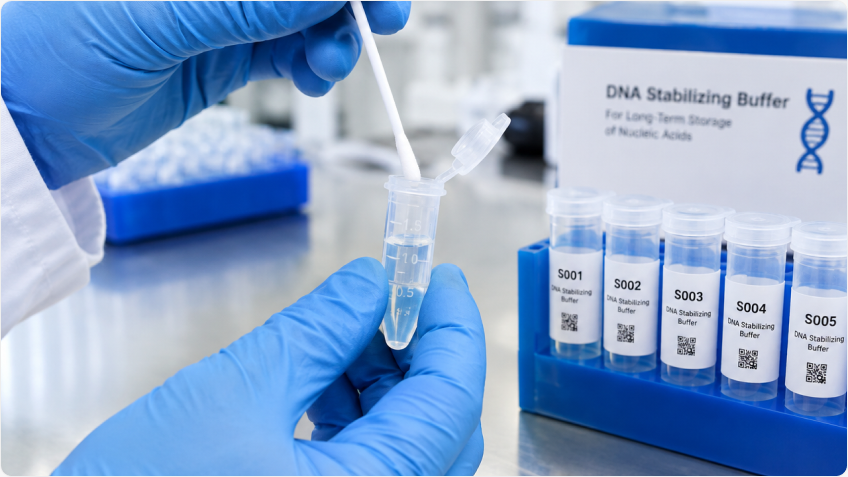

- BiomeSeq produced sequencing-ready libraries from buccal swab DNA within one working day.
- Relative abundance from a mock community matched theoretical values within 1 percentage point.
- Replicates agreed closely, with a Bray-Curtis distance of 0.05 or lower.
Abstract
The oral microbiome is a promising target for non-invasive studies, and buccal swabs make large cohorts practical. This note describes how the BiomeSeq 16S rRNA NGS Kit Bundle was used to amplify the V3–V4 region from 48 buccal swab samples, prepare libraries for the Illumina MiSeq system and analyse the data in the Nusantics Dashboard. We report taxonomic accuracy against a mock community and reproducibility across replicates.
Introduction
The 16S rRNA gene is present in all bacteria, and its V3–V4 region varies enough to tell most genera apart [1]. Sequencing it shows which bacteria are in a sample and in what proportion. A cheek swab is quick and needs no needle, but it yields little DNA, so the method has to work reliably at low input. Large surveys of healthy adults have shown that the mouth hosts one of the most diverse bacterial communities in the body [2], which makes it a useful test bed for any profiling workflow. Two things decide whether a profile can be trusted: whether it recovers a known mixture in the right proportions, and whether the same sample gives the same answer twice [3]. This note tests both.
Materials and methods
Samples. 48 buccal swabs from adult volunteers and one mock community control were collected into stabilising buffer. DNA input followed the kit manual: 41.5 ng total DNA for tissue, 15 ng for bacterial isolates and 30 ng for environmental samples. Swab DNA was treated as tissue-type input (41.5 ng, or 4.15 ng/µL).
Library preparation and sequencing. V3–V4 amplification, clean-up, indexing PCR and normalisation to 4 nM followed the five-step workflow, using the ready-to-use PCR mix. Libraries were sequenced on an Illumina MiSeq system with the MiSeq Reagent Kit v2 (500 cycles). Analysis. Reads were uploaded to the Nusantics Dashboard with the kit access code and profiled automatically.

Results
| Sample group | Median reads per sample | Genera detected |
|---|---|---|
| Mock community (n = 3) | 61,200 | 8 |
| Buccal swabs, age 18–35 (n = 24) | 52,400 | 74 |
| Buccal swabs, age 36+ (n = 24) | 49,800 | 69 |
| Negative control (n = 2) | 310 | 2 |
Conclusion
BiomeSeq gives labs a complete route from buccal swab DNA to a taxonomy profile, using one kit and one dashboard. In this sample run, the mock community was recovered within 1 percentage point of its expected proportions, and replicates stayed within a Bray-Curtis distance of 0.05. Results come from one run and one sample type, so confirm DNA input for your own swabs before scaling up.
References
- 1. Klindworth A, et al. Nucleic Acids Research, 2013 doi:10.1093/nar/gks808
- 2. Human Microbiome Project Consortium. Nature, 2012 doi:10.1038/nature11234
- 3. Bray JR, Curtis JT. Ecological Monographs, 1957 doi:10.2307/1942268